Baskin Robbins App — Mobile Ordering Mockup
Screen design, wireflow/wireframe, asset and design spec documents for Baskin Robbins mobile ordering flow mockup. Interactive prototype on Proto.io.
Overview
Concept mockup for Baskin Robbins' mobile ordering flow. Includes screen design, wireflow, asset and design spec documents — and an interactive Proto.io prototype.
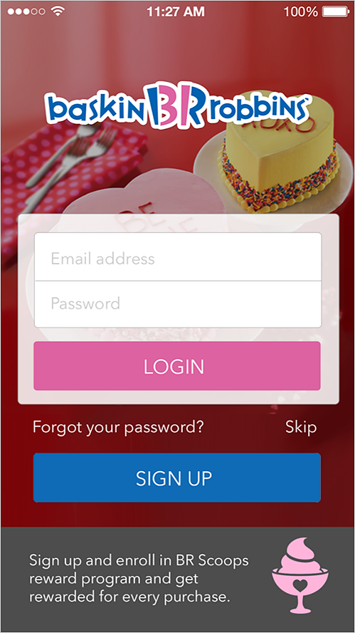
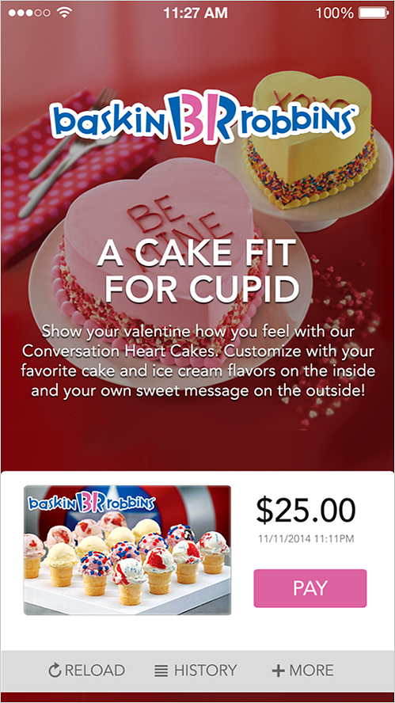
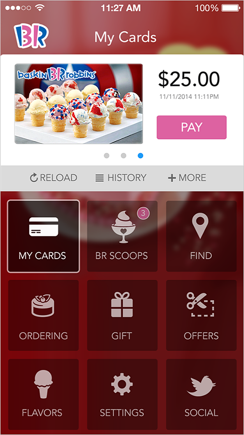
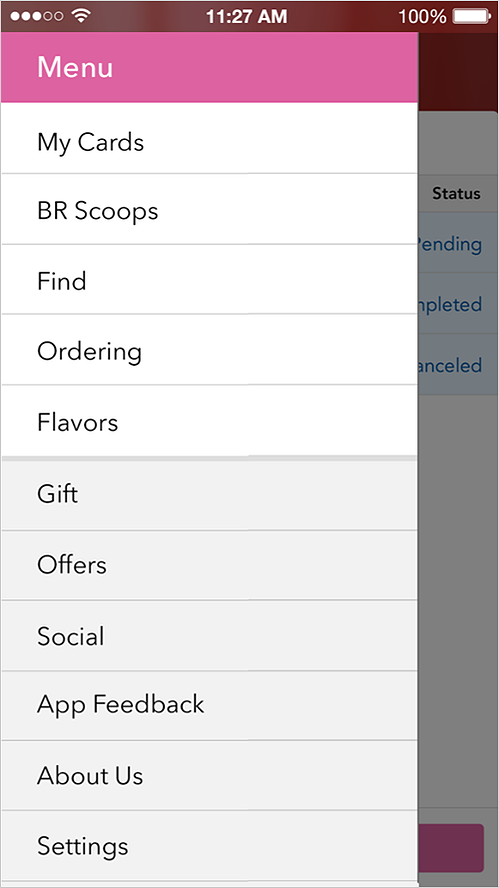
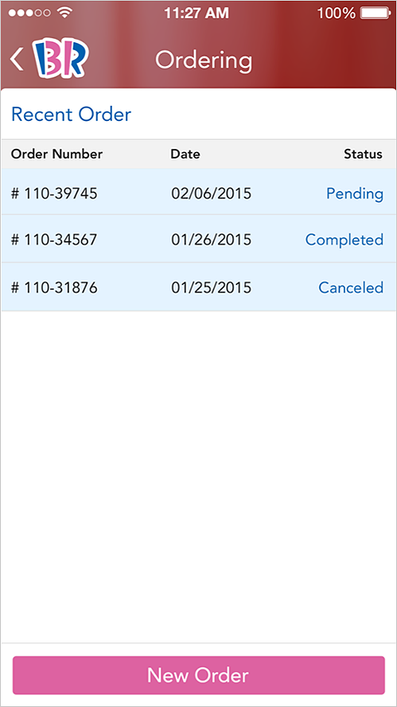
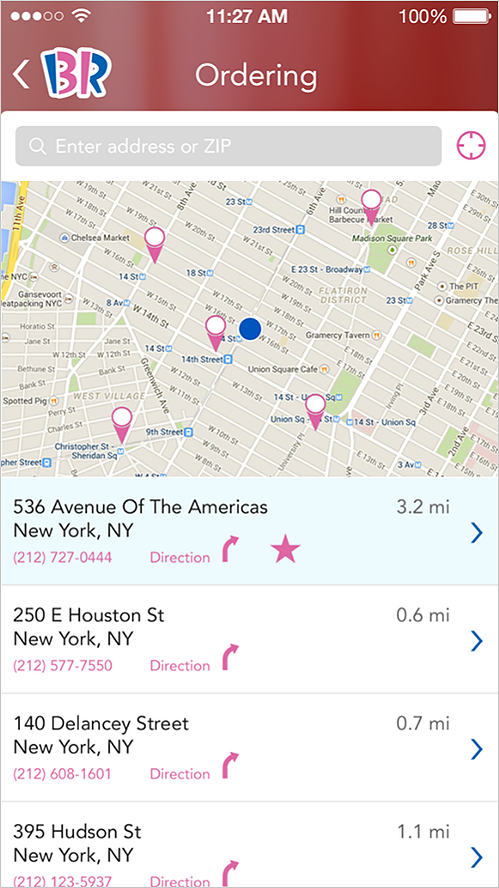
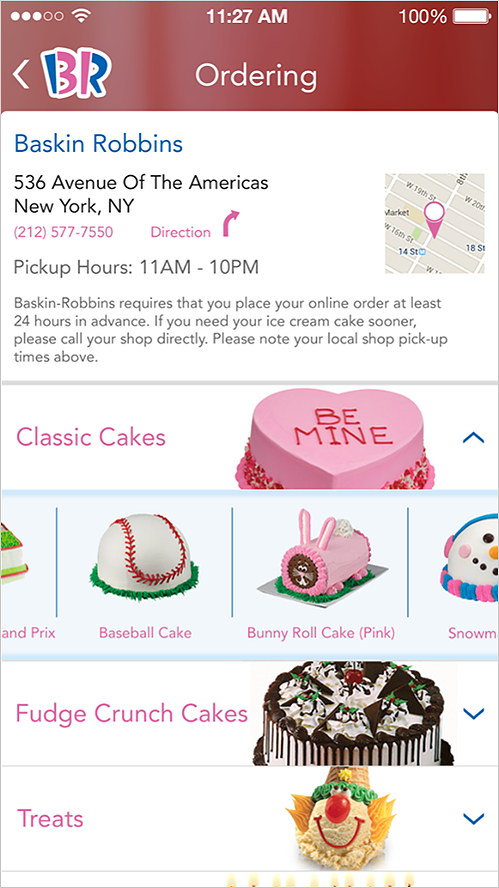
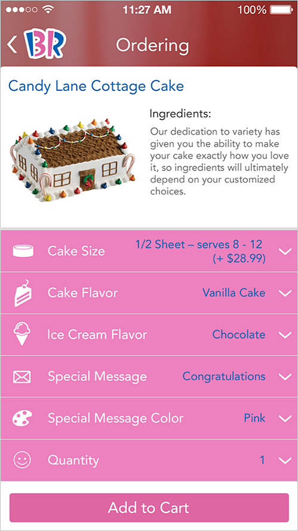
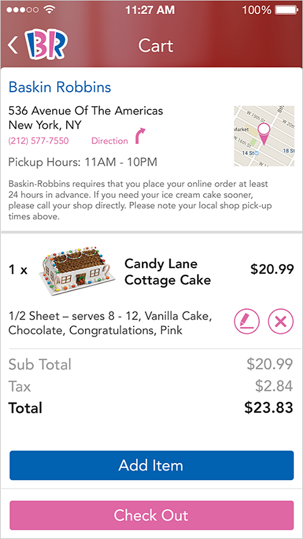
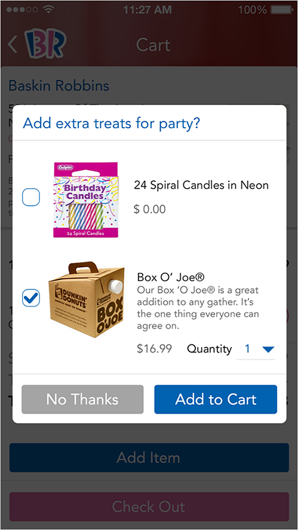
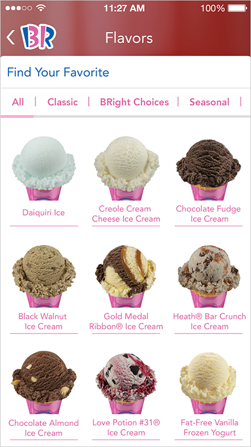
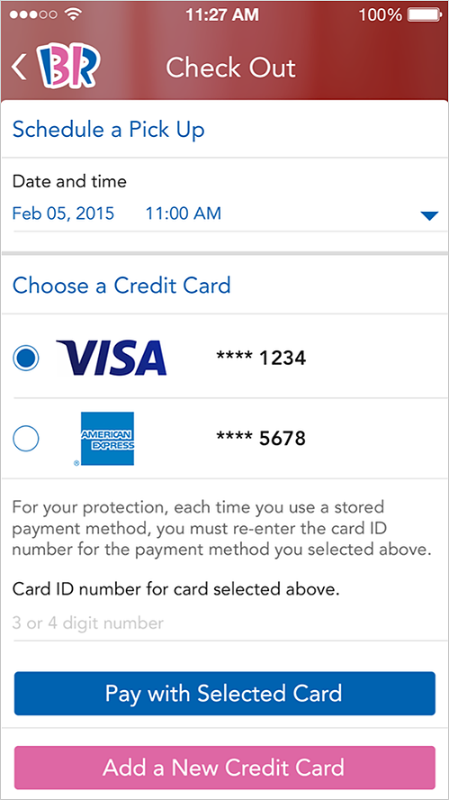
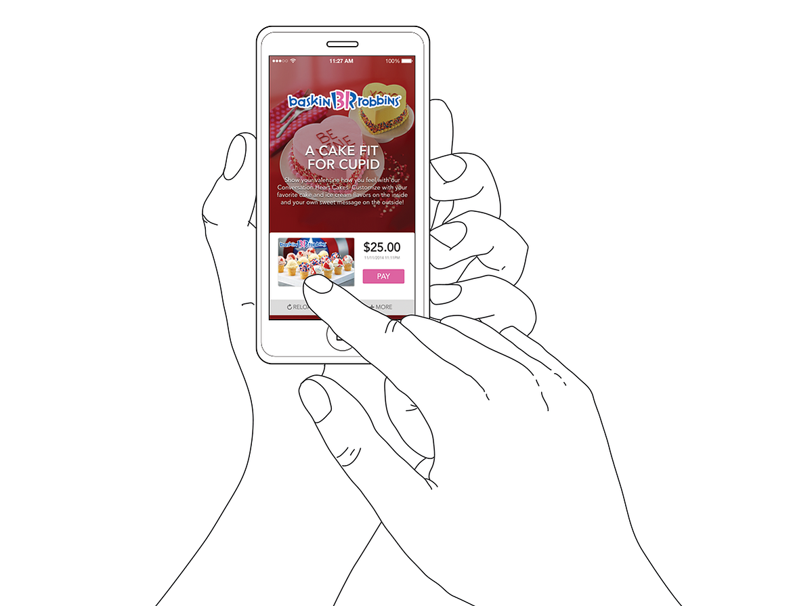
Previous
← Shell UK
Next
O2 Telefónica →